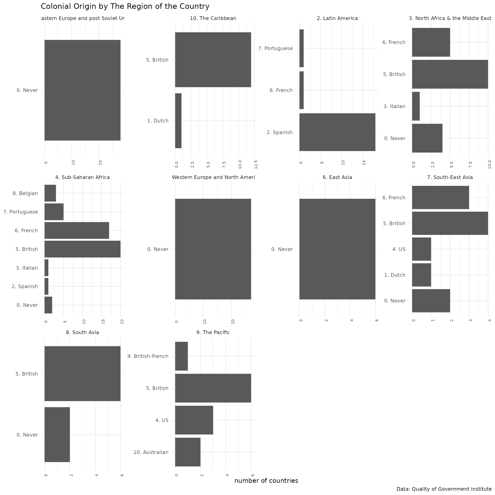

rqog-package for R
rqog_tutorial.Rmdcompiled at 2021-01-30 15:45:11
Download data from the Quality of Government Institute data
Quotation from Quality of Governance institute website
The QoG Institute was founded in 2004 by Professor Bo Rothstein and Professor Sören Holmberg. It is an independent research institute within the Department of Political Science at the University of Gothenburg. We conduct and promote research on the causes, consequences and nature of Good Governance and the Quality of Government (QoG) - that is, trustworthy, reliable, impartial, uncorrupted and competent government institutions.
The main objective of our research is to address the theoretical and empirical problem of how political institutions of high quality can be created and maintained. A second objective is to study the effects of Quality of Government on a number of policy areas, such as health, the environment, social policy, and poverty. We approach these problems from a variety of different theoretical and methodological angles.
Quality of Government institute provides data in five different data sets, both in cross-sectional and longitudinal versions:
rqog-package provides access to Basic, Standard and OECD datasets through function read_qog(). Standard data has all the same indicators as in Basic data (367 variables) and an additional ~1600 indicators. Both basic and standard datasets have 194 countries. OECD dataset has 1020 indicators from 35 countries. rqog uses longitudinal datasets by default that have time-series of varying duration from majority of the indicators and countries.
Quality of Government Institute provides codebooks for all datasets:
You consult the codebooks for description of the data and indicators.
Installation
library(devtools)
install_github("ropengov/rqog")
library(rqog)Examples
Download data and plot numeric indicators
Basic Data
Basic data has a selection of most common indicators, 344 indicators from 211 countries. Below is an example on how to extract data on population and Democracy (Freedom House/Polity) index from BRIC-countries from 1990 to 2010 and to plot it.
library(rqog)
library(dplyr)
library(ggplot2)
library(tidyr)
# Download a local coppy of the file
basic <- read_qog(which_data="basic", data_type = "time-series")
# Subset the data
dat.l <- basic %>%
# filter years and countries
filter(year %in% 1990:2010,
cname %in% c("Russia","China","India","Brazil")) %>%
# select variables
select(cname,year,p_polity2,wdi_pop1564) %>%
# gather to long format
gather(., var, value, 3:4) %>%
# remove NA values
filter(!is.na(value))
# Plot
ggplot(dat.l, aes(x=year,y=value,color=cname)) +
geom_point() + geom_line() +
geom_text(data = dat.l %>%
group_by(cname) %>%
filter(year == max(year)),
aes(x=year,y=value,label=cname),
hjust=1,vjust=-1,size=3,alpha=.8) +
facet_wrap(~var, scales="free") +
theme_minimal() +
theme(legend.position = "none") +
labs(title = "Plotting QoG basic data",
caption = "Data: QoG Basic data")
Standard data
Standard data includes 2190 indicators from 211 countries. Below is an example on how to extract data on Economic Performance and GINI index (World Bank estimate) from BRIC-countries and plot it.
library(rqog)
# Download a local coppy of the file
standard <- read_qog("standard", "time-series")
# Subset the data
dat.l <- standard %>%
# filter years and countries
filter(year %in% 1990:2020,
cname %in% c("Russia","China","India","Brazil")) %>%
# select variables
select(cname,year,bti_ep,wdi_gini) %>%
# gather to long format
gather(., var, value, 3:4) %>%
# remove NA values
filter(!is.na(value))
# Plot the data
# Plot
ggplot(dat.l, aes(x=year,y=value,color=cname)) +
geom_point() + geom_line() +
geom_text(data = dat.l %>%
group_by(cname) %>%
filter(year == max(year)),
aes(x=year,y=value,label=cname),
hjust=1,vjust=-1,size=3,alpha=.8) +
facet_wrap(~var, scales="free") +
theme_minimal() +
theme(legend.position = "none") +
labs(title = "Plotting QoG Standard data",
caption = "Data: QoG Standard data")
OECD data
OECD data includes 1006 variables, but from a smaller number of wealthier countries of 36. In the example below four indicators:
- Total expenditure on health
oecd_pphlthxp_t1c - Income inequality: GINI index (World Bank estimate)
wdi_gini - Gross National Income per Capita
oecd_natinccap_t1 - Adjusted general government debt-to-GDP (excl. unfunded pension liability)
oecd_govdebt_t1
We will include all the countries and all the years included in the data.
library(rqog)
# Download a local coppy of the file
oecd <- read_qog("oecd", "time-series")
# Subset the data
dat.l <- oecd %>%
# select variables
select(cname,year,oecd_pphlthxp_t1c,wdi_gini,oecd_natinccap_t1,oecd_govdebt_t1) %>%
# gather to long format
gather(., var, value, 3:6) %>%
# remove NA values
filter(!is.na(value))
# Plot the data
# Plot
ggplot(dat.l, aes(x=year,y=value,color=cname)) +
geom_point() + geom_line() +
geom_text(data = dat.l %>%
group_by(var,cname) %>%
filter(year == max(year)),
aes(x=year,y=value,label=cname),
hjust=1,vjust=-1,size=3,alpha=.8) +
facet_wrap(~var, scales="free") +
theme_minimal() +
theme(legend.position = "none") +
labs(title = "Plotting QoG OECD data",
caption = "Data: QoG OECD data")
Work with metadata and factor indicators
Packages is shipped with seven metadatas for each year (2016-2020) meta_basic_cs_2020, meta_basic_ts_2020, meta_std_cs_2020, meta_std_ts_2020, meta_oecd_cs_2020 and meta_oecd_ts_2020. Data frames are generated from original spss versions of data using tidymetadata::create_metadata()-function.
Browsing metadata
You can browse the content by applying grepl to name column. Let’s find indicators containing term Corruption either in lower or uppercase.
## # A tibble: 9 x 5
## code name value label class
## <chr> <chr> <dbl> <chr> <chr>
## 1 bci_bci The Bayesian Corruption Indicator NA <NA> nume…
## 2 ccp_cc Corruption Commission Present in Co… 1 1. Yes fact…
## 3 ccp_cc Corruption Commission Present in Co… 2 2. No fact…
## 4 ccp_cc Corruption Commission Present in Co… 90 90. left explicitly… fact…
## 5 ccp_cc Corruption Commission Present in Co… 96 96. Other fact…
## 6 ccp_cc Corruption Commission Present in Co… 97 97. Unable to deter… fact…
## 7 vdem_co… Political corruption index NA <NA> nume…
## 8 wbgi_cce Control of Corruption, Estimate NA <NA> nume…
## 9 wdi_tac… CPIA transparency-accountability-co… NA <NA> nume…Assigning labels to values with metadata
The data rqoq imports to R is in .csv-format without the labels and names shipped together with spss or Stata formats. As such it is the desired format to work with in R, especially with numeric indicators. However, many of the indicators in QoG are factors meaning that they have discrete values with a corresponding label. You can use the metadatas to assign labels for values of such indicators. Lets take the ccp_cc as an example below and first print the value and label colums of the data.
## # A tibble: 5 x 2
## value label
## <dbl> <chr>
## 1 1 1. Yes
## 2 2 2. No
## 3 90 90. left explicitly to non-constitution
## 4 96 96. Other
## 5 97 97. Unable to determineCurrently we have basic data in R in an object called basic. Lets see the frequencies of each value
basic %>% count(ccp_cc)## ccp_cc n
## 1 1 507
## 2 2 8850
## 3 96 246
## 4 NA 6222Now, using the metadata with assign values with corresponding labels
basic %>%
count(ccp_cc) %>%
mutate(ccp_cc_lab = meta_basic_ts_2020[meta_basic_ts_2020$code == "ccp_cc",]$label[match(ccp_cc,meta_basic_ts_2020[meta_basic_ts_2020$code == "ccp_cc",]$value)])## ccp_cc n ccp_cc_lab
## 1 1 507 1. Yes
## 2 2 8850 2. No
## 3 96 246 96. Other
## 4 NA 6222 <NA>So, lets find two factor variables with few more values from the cross-sectional data
meta_basic_cs_2020 %>%
filter(class =="factor") %>%
group_by(code) %>%
summarise(n_of_values = n()) %>%
arrange(desc(n_of_values))## # A tibble: 26 x 2
## code n_of_values
## <chr> <int>
## 1 gol_pr 28
## 2 ht_regtype 20
## 3 ht_regtype1 13
## 4 gol_est_spec 12
## 5 ht_colonial 11
## 6 ht_region 10
## 7 cpds_tg 7
## 8 ccp_slave 6
## 9 ccp_cc 5
## 10 ccp_childwrk 5
## # … with 16 more rowsLets take these two factors and summarise the regime types per regions
meta_basic_cs_2020 %>%
filter(code %in% c("ht_region","ht_regtype")) %>%
distinct(code, .keep_all = TRUE)## # A tibble: 2 x 5
## code name value label class
## <chr> <chr> <dbl> <chr> <chr>
## 1 ht_region The Region of the Cou… 1 1. Eastern Europe and post Sovi… fact…
## 2 ht_regtype Regime Type 1 limited multiparty fact…
# lets download the cross-sectional data first
basic_cs <- read_qog(which_data = "basic", data_type = "cross-sectional")
plot_d <- basic_cs %>%
# group by region
group_by(ht_region) %>%
# count per group frequencies of each regime type
count(ht_regtype) %>%
ungroup() %>%
# label
mutate(ht_region_lab = meta_basic_ts_2020[meta_basic_ts_2020$code == "ht_region",]$label[match(ht_region,meta_basic_ts_2020[meta_basic_ts_2020$code == "ht_region",]$value)],
ht_regtype_lab = meta_basic_ts_2020[meta_basic_ts_2020$code == "ht_regtype",]$label[match(ht_regtype,meta_basic_ts_2020[meta_basic_ts_2020$code == "ht_regtype",]$value)]) %>%
na.omit()
head(plot_d)## # A tibble: 6 x 5
## ht_region ht_regtype n ht_region_lab ht_regtype_lab
## <int> <int> <int> <chr> <chr>
## 1 1 1 9 1. Eastern Europe and post Sovie… limited multipar…
## 2 1 8 2 1. Eastern Europe and post Sovie… one-party
## 3 1 100 16 1. Eastern Europe and post Sovie… democracy
## 4 2 1 3 2. Latin America limited multipar…
## 5 2 8 1 2. Latin America one-party
## 6 2 100 16 2. Latin America democracyThen we can create a simple bar plot
# indicators names from metadata
ind_name <- unique(meta_basic_cs_2020[meta_basic_cs_2020$code == "ht_regtype",]$name)
group_name <- unique(meta_basic_cs_2020[meta_basic_cs_2020$code == "ht_region",]$name)
ggplot(plot_d, aes(x=ht_regtype_lab,y=n)) +
geom_col() +
facet_wrap(~ht_region_lab, scales = "free") +
theme_minimal() + theme(axis.text.x = element_text(angle = 90, size = 7)) +
labs(title = paste0(ind_name," by ",group_name ),
caption = "Data: Quality of Government institute", x = NULL, y = "number of countries") +
coord_flip()
devtools::session_info()## ─ Session info ───────────────────────────────────────────────────────────────
## setting value
## version R version 4.0.3 (2020-10-10)
## os Linux Mint 20.1
## system x86_64, linux-gnu
## ui X11
## language en_US
## collate en_US.UTF-8
## ctype en_US.UTF-8
## tz Europe/Helsinki
## date 2021-01-30
##
## ─ Packages ───────────────────────────────────────────────────────────────────
## package * version date lib source
## assertthat 0.2.1 2019-03-21 [4] CRAN (R 4.0.0)
## cachem 0.0.0.9000 2021-01-11 [2] Github (r-lib/cachem@59f9e71)
## callr 3.5.1 2020-10-13 [4] CRAN (R 4.0.3)
## cellranger 1.1.0 2016-07-27 [4] CRAN (R 4.0.0)
## cli 2.2.0 2020-11-20 [4] CRAN (R 4.0.3)
## colorspace 2.0-0 2020-11-11 [4] CRAN (R 4.0.3)
## crayon 1.3.4 2017-09-16 [2] CRAN (R 4.0.3)
## DBI 1.1.1 2021-01-15 [4] CRAN (R 4.0.3)
## desc 1.2.0 2018-05-01 [4] CRAN (R 4.0.0)
## devtools 2.3.2 2020-09-18 [4] CRAN (R 4.0.2)
## digest 0.6.27 2020-10-24 [4] CRAN (R 4.0.3)
## dplyr * 1.0.3 2021-01-15 [4] CRAN (R 4.0.3)
## ellipsis 0.3.1 2020-05-15 [4] CRAN (R 4.0.0)
## evaluate 0.14 2019-05-28 [4] CRAN (R 4.0.0)
## fansi 0.4.2 2021-01-15 [4] CRAN (R 4.0.3)
## farver 2.0.3 2020-01-16 [4] CRAN (R 4.0.0)
## fastmap 1.1.0 2021-01-25 [4] CRAN (R 4.0.3)
## forcats 0.5.1 2021-01-27 [4] CRAN (R 4.0.3)
## fs 1.5.0 2020-07-31 [4] CRAN (R 4.0.2)
## generics 0.1.0 2020-10-31 [4] CRAN (R 4.0.3)
## ggplot2 * 3.3.3 2020-12-30 [4] CRAN (R 4.0.3)
## glue 1.4.2 2020-08-27 [2] CRAN (R 4.0.3)
## gtable 0.3.0 2019-03-25 [4] CRAN (R 4.0.0)
## haven 2.3.1 2020-06-01 [4] CRAN (R 4.0.0)
## highr 0.8 2019-03-20 [4] CRAN (R 4.0.0)
## hms 1.0.0 2021-01-13 [4] CRAN (R 4.0.3)
## htmltools 0.5.0.9003 2021-01-11 [2] Github (rstudio/htmltools@d18bd8e)
## knitr 1.31 2021-01-27 [4] CRAN (R 4.0.3)
## labeling 0.4.2 2020-10-20 [4] CRAN (R 4.0.3)
## lifecycle 0.2.0 2020-03-06 [4] CRAN (R 4.0.0)
## magrittr 2.0.1 2020-11-17 [4] CRAN (R 4.0.3)
## memoise 2.0.0 2021-01-26 [4] CRAN (R 4.0.3)
## munsell 0.5.0 2018-06-12 [4] CRAN (R 4.0.0)
## pillar 1.4.7 2020-11-20 [4] CRAN (R 4.0.3)
## pkgbuild 1.2.0 2020-12-15 [4] CRAN (R 4.0.3)
## pkgconfig 2.0.3 2019-09-22 [4] CRAN (R 4.0.0)
## pkgdown 1.6.1 2020-09-12 [3] CRAN (R 4.0.3)
## pkgload 1.1.0 2020-05-29 [4] CRAN (R 4.0.0)
## prettyunits 1.1.1 2020-01-24 [4] CRAN (R 4.0.0)
## processx 3.4.5 2020-11-30 [4] CRAN (R 4.0.3)
## ps 1.5.0 2020-12-05 [4] CRAN (R 4.0.3)
## purrr 0.3.4 2020-04-17 [4] CRAN (R 4.0.0)
## R6 2.5.0 2020-10-28 [4] CRAN (R 4.0.3)
## ragg 0.4.1 2021-01-11 [3] CRAN (R 4.0.3)
## Rcpp 1.0.6 2021-01-15 [4] CRAN (R 4.0.3)
## readxl 1.3.1 2019-03-13 [4] CRAN (R 4.0.0)
## remotes 2.2.0 2020-07-21 [4] CRAN (R 4.0.2)
## rlang 0.4.10 2020-12-30 [4] CRAN (R 4.0.3)
## rmarkdown 2.6 2020-12-14 [4] CRAN (R 4.0.3)
## rprojroot 2.0.2 2020-11-15 [4] CRAN (R 4.0.3)
## rqog * 0.4.2021 2021-01-30 [1] local
## rstudioapi 0.13 2020-11-12 [4] CRAN (R 4.0.3)
## scales 1.1.1 2020-05-11 [4] CRAN (R 4.0.0)
## sessioninfo 1.1.1 2018-11-05 [4] CRAN (R 4.0.0)
## stringi 1.5.3 2020-09-09 [4] CRAN (R 4.0.2)
## stringr 1.4.0 2019-02-10 [4] CRAN (R 4.0.0)
## systemfonts 0.3.2 2020-09-29 [4] CRAN (R 4.0.2)
## testthat 3.0.1 2020-12-17 [4] CRAN (R 4.0.3)
## textshaping 0.2.1 2020-11-13 [3] CRAN (R 4.0.3)
## tibble 3.0.6 2021-01-29 [4] CRAN (R 4.0.3)
## tidyr * 1.1.2 2020-08-27 [4] CRAN (R 4.0.2)
## tidyselect 1.1.0 2020-05-11 [4] CRAN (R 4.0.0)
## usethis 2.0.0 2020-12-10 [4] CRAN (R 4.0.3)
## utf8 1.1.4 2018-05-24 [4] CRAN (R 4.0.0)
## vctrs 0.3.6 2020-12-17 [4] CRAN (R 4.0.3)
## withr 2.4.1 2021-01-26 [4] CRAN (R 4.0.3)
## xfun 0.20 2021-01-06 [4] CRAN (R 4.0.3)
## yaml 2.2.1 2020-02-01 [4] CRAN (R 4.0.0)
##
## [1] /tmp/RtmpzOuwaN/temp_libpath5c66785f4ada
## [2] /home/aurelius/R/x86_64-pc-linux-gnu-library/4.0
## [3] /usr/local/lib/R/site-library
## [4] /usr/lib/R/site-library
## [5] /usr/lib/R/library